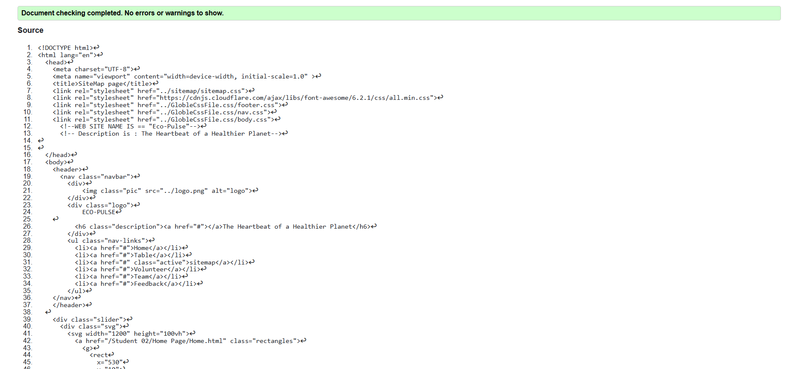
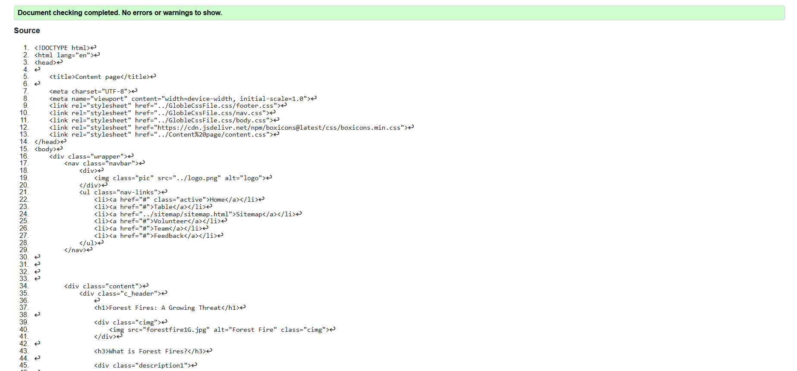

User Profile validation report
Short reflection on the validation report for the pages you implemented.
Back to Page Editor page
Sitemap validation report
Short reflection on the validation report for the pages you implemented.

Back to Page Editor page
Content Page validation report
Short reflection on the validation report for the pages you implemented.
